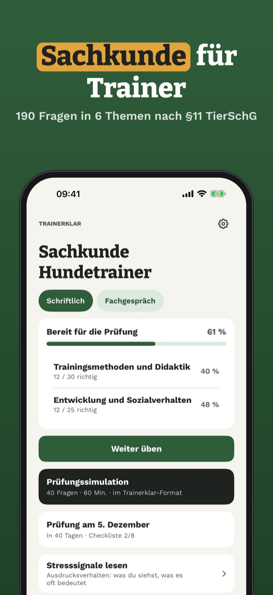
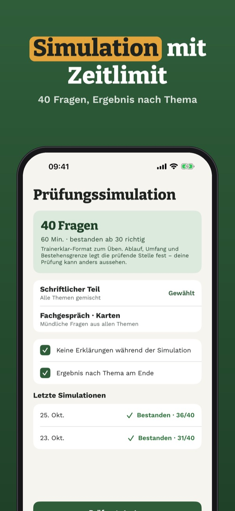

Sachkundeprüfung §11 TierSchG
Lerne für die Sachkundeprüfung als Hundetrainer: Fragen mit Erklärung, Prüfungssimulation und Karten fürs Fachgespräch – auf Deutsch und offline.


Trainerklar hilft dir, dich auf die Sachkundeprüfung für die Erlaubnis als Hundetrainer nach §11 TierSchG vorzubereiten – für Trainer, nicht für Halter.
20 Fragen, die Begriffe, die Stresssignal-Tabelle und den Prüfungstag kannst du ohne Kauf nutzen. Die Vollversion ist ein Einmalkauf und schaltet alle Fragen, Simulationen, die Fachgesprächskarten und die Statistik frei. Kein Abo.
Ablauf und Umfang der Sachkundeprüfung legt die zuständige Behörde fest; Trainerklar bereitet vor, garantiert aber kein Bestehen. Trainerklar ist unabhängig, erteilt keine Erlaubnis und ist nicht mit Veterinärämtern, Tierärztekammern, Behörden oder Verbänden verbunden. Kein Hundeführerschein für Halter.
Terms of Use (EULA): https://www.apple.com/legal/internet-services/itunes/dev/stdeula/
Privacy: https://baytechbv.github.io/privacy/hundetrainer-de/